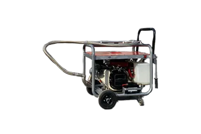

Termal · Model TERMAL-EL
Termal El Tipi
Benzinli termal el tipi; kanal ilaçlama, sıcak sisleme ve don önleme
Motor: Benzinli Briggs
İlaç Tank Kapasitesi: 15–50 litre
İlaç Çıkış Debisi: 15 bar
Püskürtme Hortumu: 2.30 m esnek paslanmaz kanal aparatı
Teknik Özellikler
Termal El Tipi — teknik tablo
| Motor | Benzinli Briggs |
|---|---|
| İlaç Tank Kapasitesi | 15–50 litre |
| İlaç Çıkış Debisi | 15 bar |
| Püskürtme Hortumu | 2.30 m esnek paslanmaz kanal aparatı |
| Solüsyon | Yağ bazlı termal solüsyon |
| Damla Çapı | ~20 mikron (termal) |
| Uygulama | Kanal ilaçlama, açık alan sıcak sisleme, don önleme |
Neden bu model
Detaylı açıklama
Termal El Tipi Sisleme Cihazı Nedir?
Benzinli Briggs motorla çalışan bu termal el tipi sisleme cihazı, kanal ilaçlama, açık alan sıcak sisleme ve don önleme uygulamaları için tasarlanmıştır. Cihaz, ilaç ve yağ bazlı solüsyon karışımını yüksek ısıya maruz bırakarak yaklaşık 20 mikron çapında yoğun bir sis üretir. 2.30 metrelik paslanmaz çelik esnek kanal aparatı, sisin kanalizasyon hatları ve çöp konteynerleri gibi kapalı hacimlere nüfuz etmesini sağlar; hortum çıkarıldığında ise cihaz açık alan termal sisleme moduna geçer.
Termal El Tipi Cihaz Nerelerde Kullanılır?
Kanalizasyonlar, oteller, eğlence parkları, golf sahaları, askeri alanlar, tatil kamp ve köyleri, yeşil alanlar ile ormanlık bölgelerde larva, sivrisinek ve büyük cüsseli böceklerle mücadelede kullanılır. Tarımsal ve kırsal alanlarda ahırlar, ağıllar, tavuk çiftlikleri ve seralarda bitki korumada tercih edilir; kışın seralarda donu önlemek için antifriz amaçlı da çalıştırılabilir. Bataklık, atık su ve çöp yığın alanlarında koku giderici dezenfektan olarak kullanılabilen cihaz, elde taşınabilir yapısı sayesinde araç üstü sistemlerin ulaşamadığı dar ve zorlu noktalara erişim sağlar.
Teknik Üstünlükler: Neden Termal El Tipi?
Yaklaşık 20 mikronluk termal sis, havada uzun süre asılı kalarak hedef bölgede kalıcı bir biyosidal etki oluşturur; hava sirkülasyonu olmayan ortamda bir zerreciğin 10 metreden yere düşmesi yaklaşık 14 dakika sürer. Elde taşınabilir tasarımı, operatörün araçtan inmeden dar geçitlerde ve zorlu arazide hızlı müdahale etmesine imkân tanır. 15 bar çıkış basıncı ve 15–50 litre solüsyon kapasitesi, farklı ölçekteki saha çalışmalarına uyum sağlar. Paslanmaz çelik esnek hortum, kanal geometrilerine kolay nüfuz sağlarken korozyona karşı dayanıklıdır. Tek cihazla hem kanal ilaçlama, hem açık alan sıcak sisleme, hem de don önleme yapılabilmesi, ekipman yatırımını tek bir çözümde toplar.
Termal El Tipi Cihaz Fiyatı ve Teklif Süreci
Termal El Tipi cihazın fiyatı, kullanım amacınıza ve sipariş adedinize göre değişebileceğinden sitemizde sabit fiyat yayınlamıyoruz. "Teklif Al" formunu doldurarak ihtiyacınıza özel bir teklif alabilir; tekerlekli ve daha yüksek kapasiteli bir alternatif için Duru K 100 modelini de inceleyebilirsiniz.
Kullanım Alanları
Bu model nerede tercih ediliyor?
Belediye
Hastane
Sera
Fabrika
Askeriye
Çiftlik
Sıkça Sorulan Sorular
Hızlı yanıtlar
Kanal ilaçlama, açık alan sıcak sisleme ve don önleme (antifriz) uygulamaları için uygundur.
Kışın seralarda uygun antifriz solüsyonuyla çalıştırılarak bitkilerin ve ortamın donmasının önüne geçilir.
Termal sisleme için yağ bazlı solüsyon karışımı kullanılır.
Termal El Tipi elde taşınabilir ve daha esnek kullanım sunar; K 100 ise tekerlekli şasesi ve 15 HP motoruyla daha yüksek kapasiteli sürekli saha çalışmaları için tasarlanmıştır.
20 mikronluk zerrecikler havada uzun süre asılı kalarak kalıcı ve yüksek verimli bir biyosidal etki sağlar.
İlgili Ürünler